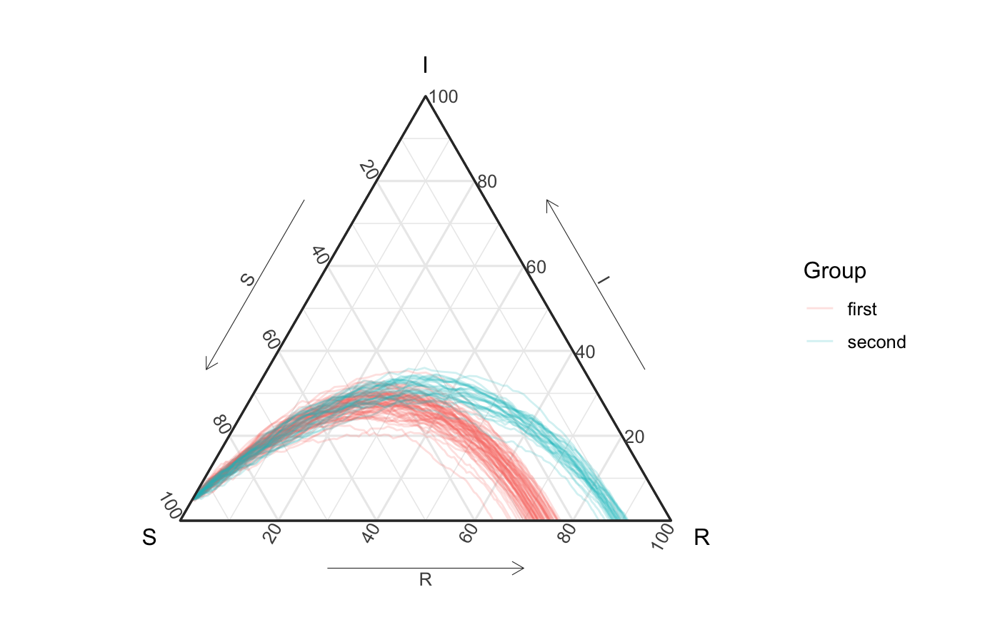
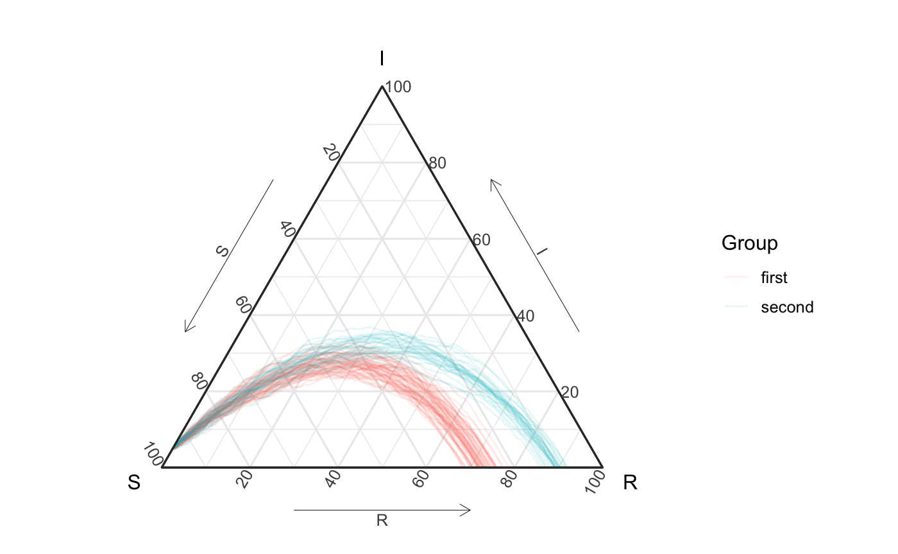
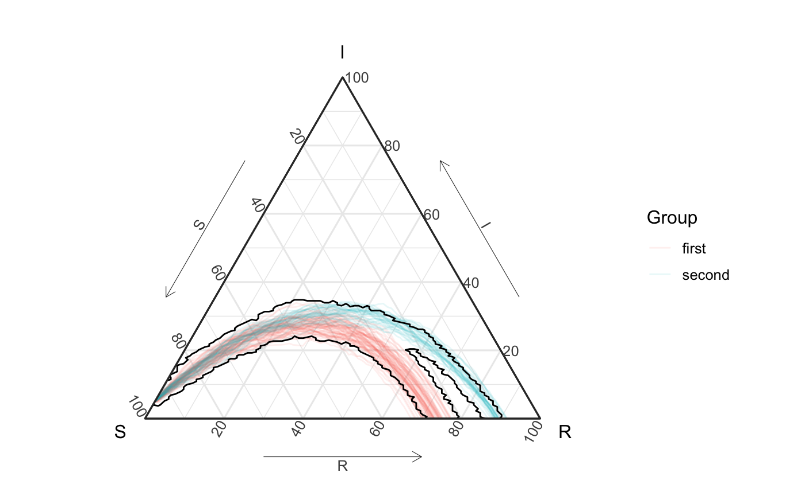
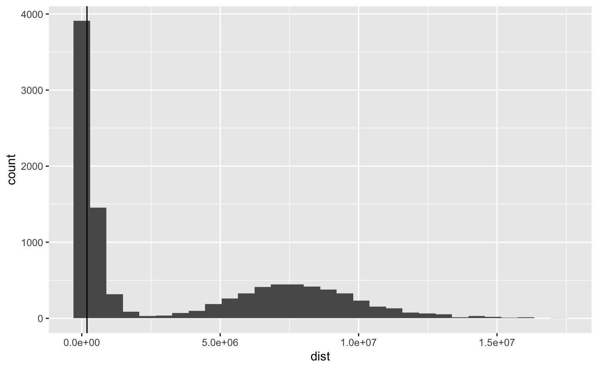
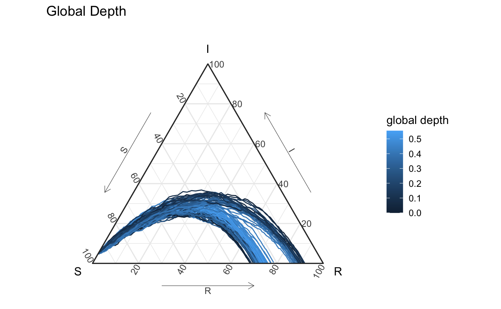
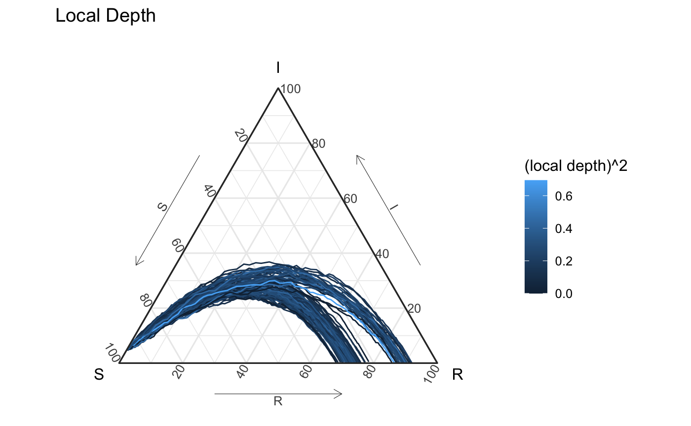
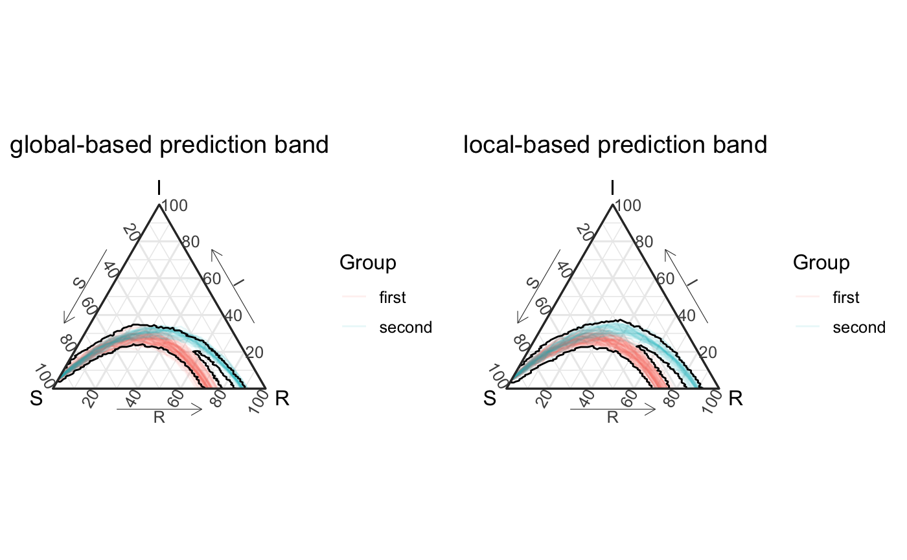
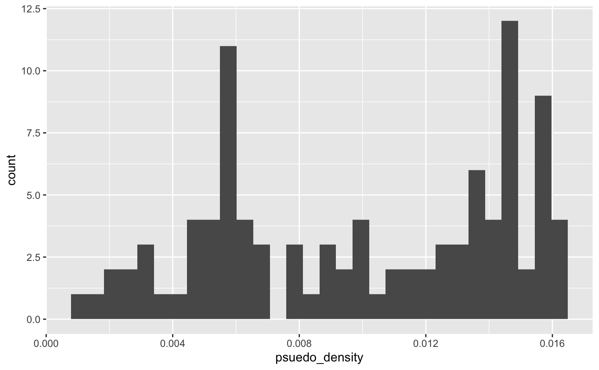
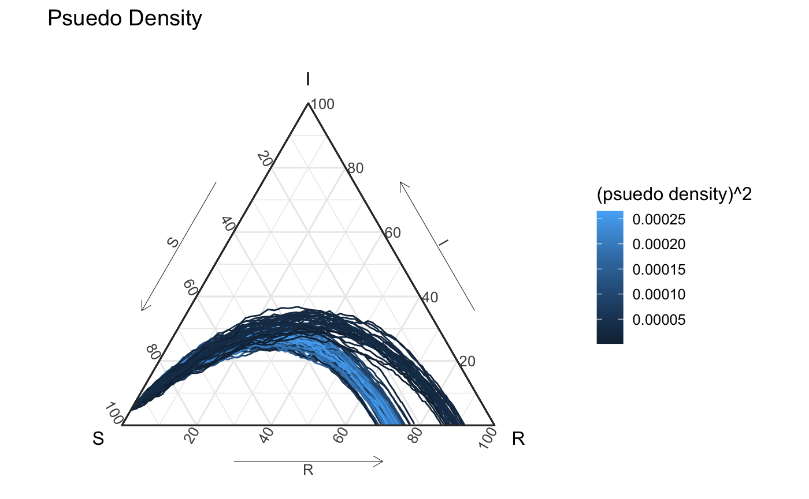
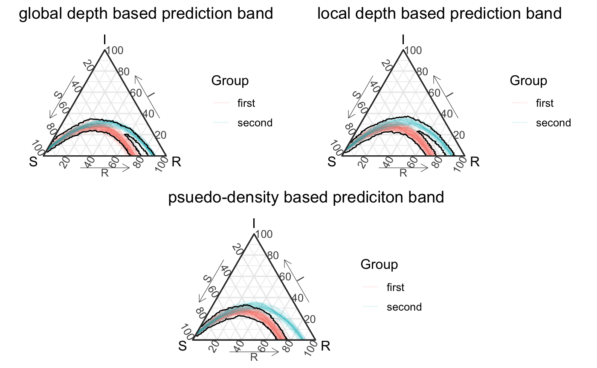

Understanding Prediction Bands 2 and the Impact of Quantile Functions
Source:vignettes/not-built-vignettes/depths-impact-on-prediction-bands2.Rmd
depths-impact-on-prediction-bands2.RmdOverview
Creating and quantifying prediction regions in epidemiological function space is a complicated endeavor. In this vignette we focus on providing the reader some background for the approach presented in this package. Although our work was “birthed” from work in (Dalmasso et al. 2019)1, we provide more statistical grounding for our shared approaches and cleaner and smarter approaches for simulation based prediction regions for multivariate functional data (functions with output in multi-dimensional space).
The first section of this vignette is a “literature” review of some useful tools and related literature in univariate Euclidean space. We focus on creating rudimentary level sets for densities and discuss estimated vs true CDEs and the connection this discussion has with conformal inference (Vovk, Gammerman, and Shafer 2005).
The second part of this vignette focusing on understanding the use of different quantile functions and how they aid in creating the different prediction bands for epidemic models. In this example, we present some SIR data (see Comparing Models (to Models) and Epidemics (to Models) for examples that can quickly apply to higher dimensions.), that contains interesting group structure, and we explore how local vs global depth, and psuedo-densities creates different prediction bands. Our vignette on the differences between density estimates and depth (local and global) may also help your understanding after reading this section of the vignette.
Section 1: An introduction to creating prediction regions with level sets
There are many ways to create prediction regions. A very common example is prediction regions / intervals for for a linear regression model. Under assumptions about the linearity of \(y|X\) and the normality of the residuals, we have a prediction interval for \(y_i|X_i\) defined as
\[ X_i^T\beta \pm z_{\alpha/2} \cdot \hat{\sigma} \sqrt{1 + X_i^T \hat{\Sigma}X_i} \;, \] which should contain \(y_i\) \((1-\alpha)100\%\) if assumptions hold.
Such a prediction region relies heavily on the strict assumptions of the linear model. It is often useful to assume less strict assumptions for the generative distribution, potentially as far as fitting some black models (like described in (Izbicki and Lee 2017)) that return an estimate of the conditional density to \(y|x\) to define prediction regions.
This brings us to the motivation for our prediction regions - level sets. Level sets are know to be the best (most efficient) prediction regions given a density is known (mentioned in passing in (Lei, Robins, and Wasserman 2013)). Although often visualized by just evaluating the density over a grid, there are many ways to estimate density level sets, especially when one has a sampling from the underlying distribution. (Grenander 1981; Walther 1997; n.d.), all present possible ways to use a union of balls to represent level sets for densities. Walther’s more efficient approach is visualized below.

Our approach builds off of prediction regions through level sets from low-dimensional Euclidean space to multivariate functional epidemics.
Section 2: Prediction bands from epidemic simulations
In order to demonstrate our approaches to building prediction regions for epidemics, we start with a data example, examining the structure and then look at different approaches to contain a desired region in the space.
Data example
To understand how we create prediction regions (and a few options we provide), we will examine a generative model that sees the true epidemic comes from a mixture of these two models. Specially,
\[ \text{Epidemic} \sim .7 \cdot \text{Model}_1 + .3 \cdot \text{Model}_2 \] where \[ \text{Model}_1 = SIR(\beta = .1, \gamma = .03) \\ \text{Model}_2 = SIR(\beta = .15, \gamma = .05) \]
## first group ----------- beta <- .1 gamma <- .03 n <- 100 prop_class_1 <- .7 out <- simulate_SIR_agents(n_sims = round(.7*n), n_time_steps = 100, beta = beta, gamma = gamma, init_SIR = c(950, 50, 0)) df_group <- out %>% group_by(sim) %>% agents_to_aggregate(states = c("tI", "tR"), min_max_time = c(0,100)) %>% rename(S = "X0", I = "X1", R = "X2") ## second group ---------- beta <- .15 gamma <- .05 out2 <- simulate_SIR_agents(n_sims = round((1-.7)*n), n_time_steps = 100, beta = beta, gamma = gamma, init_SIR = c(950, 50, 0)) df_group2 <- out2 %>% group_by(sim) %>% agents_to_aggregate(states = c("tI", "tR"), min_max_time = c(0,100)) %>% rename(S = "X0", I = "X1", R = "X2") df_all <- rbind(df_group %>% mutate(id = "first"), df_group2 %>% mutate(id = "second")) df_all_vis <- df_all %>% mutate(id2 = factor(paste0(id, sim), levels = paste0(rep(c("first", "second"), each = 100), rep(1:100, length = 200)))) %>% mutate(id2 = as.numeric(id2))
The following figure shows these curves on the unit simplex. Notice that is hard for the eye to tell that the second group only contains 30% of simulations (this observation will be important later).
all_curves <- ggplot(df_all_vis) + geom_path(aes(x = S, y = I, z = R, color = id, group = id2), alpha = .2) + coord_tern() + labs(color = "Group") + theme_sir() #> Coordinate system already present. Adding new coordinate system, which will replace the existing one. all_curves

Psuedo-density
To summarize these curves we want wish capture a representation of highly likely curves through a prediction region. Although one cannot define a density for multivariate functions
Data generation
Here’s our visualization of simulations (actually from 2 different models), but we can imagine that we believe that the true epidemic comes from a mixture of these two models. That is
\[ \text{Epidemic} \sim .7 \cdot \text{Model}_1 + .3 \cdot \text{Model}_2 \] where \[ \text{Model}_1 = SIR(\beta = .1, \gamma = .03) \\ \text{Model}_2 = SIR(\beta = .15, \gamma = .05) \]
## first group ----------- beta <- .1 gamma <- .03 n <- 100 prop_class_1 <- .7 out <- simulate_SIR_agents(n_sims = round(.7*n), n_time_steps = 100, beta = beta, gamma = gamma, init_SIR = c(950, 50, 0)) df_group <- out %>% group_by(sim) %>% agents_to_aggregate(states = c("tI", "tR"), min_max_time = c(0,100)) %>% rename(S = "X0", I = "X1", R = "X2") ## second group ---------- beta <- .15 gamma <- .05 out2 <- simulate_SIR_agents(n_sims = round((1-.7)*n), n_time_steps = 100, beta = beta, gamma = gamma, init_SIR = c(950, 50, 0)) df_group2 <- out2 %>% group_by(sim) %>% agents_to_aggregate(states = c("tI", "tR"), min_max_time = c(0,100)) %>% rename(S = "X0", I = "X1", R = "X2") df_all <- rbind(df_group %>% mutate(id = "first"), df_group2 %>% mutate(id = "second")) df_all_vis <- df_all %>% mutate(id2 = factor(paste0(id, sim), levels = paste0(rep(c("first", "second"), each = 100), rep(1:100, length = 200)))) %>% mutate(id2 = as.numeric(id2))
all_curves <- ggplot(df_all_vis) + geom_path(aes(x = S, y = I, z = R, color = id, group = id2), alpha = .1) + coord_tern() + labs(color = "Group") + theme_sir() #> Coordinate system already present. Adding new coordinate system, which will replace the existing one. all_curves

Creation of prediction bands
Our current framework through geom_prediction_band uses a global distance-based depth based on work from Geenens & Nieto-Reyes’s distance depth (directly explorably with the function distance_depth_function) (Geenens and Nieto-Reyes 2017). Below you’ll see that, the visualized prediction band using this global depth doesn’t actually capture the area of the simplex we might want - specifically it seems to like the interior between these two groups a little bit more than what you and I might want. This is largely associated with the global nature of depth.
global_depth_pb <- all_curves + geom_prediction_band(data = df_all_vis, aes(x = S, y = I, z = R, sim_group = id2), pb_type = "delta_ball", conf_level = .6) + coord_tern() + theme_sir() #> Coordinate system already present. Adding new coordinate system, which will replace the existing one. global_depth_pb #> Due to dist_params$dist_approach = "equa_dist", this may take a little while - see `filament_compression` examples for a work-around if you're making this plot multiple times

A local approach
Agostinelli & Romanazzi (2011) proposed an approach to create local depth, and we have extended their ideas to Geenens & Nieto-Reyes into a local distance based depth (directly explorably with the function local_distance_depth_function) (Agostinelli and Romanazzi 2011). Agostinelli & Romanazzi (2011) recommended a localized parameter \(\tau\) around the 20-30% quantile of the distance distribution - which we explore here.
Tau selection
dist_mat <- df_all %>% arrange(t) %>% # just to be safe select(-t) %>% group_by(id, sim) %>% group_split() %>% dist_matrix_innersq_direction(position = 2:4, verbose = TRUE) quantile(dist_mat,probs = 0:10/10) %>% t %>% data.frame(check.names = F) %>% DT::datatable(options = list(dom = 't'))
tau <- quantile(dist_mat,probs = .3)["30%"] dist_mat %>% c() %>% data.frame(dist = .) %>% ggplot(aes(x = dist)) + geom_histogram(bins = 30) + geom_vline(xintercept = tau)

Building an understanding
To gain a bit of understanding, we the below code allows us to explore the depth of each curve relative to global depth and local depth.
local_depth <- df_all %>% arrange(t) %>% # just to be safe select(-t) %>% group_by(id, sim) %>% filament_distance_depth(depth_func = function(dist_mat) { local_distance_depth_function(dist_mat, tau = tau) }, data_columns = c("S","I","R")) global_depth <- df_all %>% arrange(t) %>% # just to be safe select(-t) %>% group_by(id, sim) %>% filament_distance_depth(depth_func = function(dist_mat) { distance_depth_function(dist_mat) }, data_columns = c("S","I","R")) df_all_ld <- df_all_vis %>% group_by(id, sim) %>% nest() %>% ungroup() %>% mutate(local_depth = local_depth, global_depth) %>% unnest(col = c(data)) %>% mutate(local_depth2 = cut(local_depth, breaks = 5), global_depth2 = cut(global_depth, breaks = 5))
df_all_ld %>% ggplot(aes(x = S, y = I, z = R, color = global_depth, group = id2)) + geom_path() + coord_tern() + labs(title = "Global Depth", color = "global depth") + theme_sir() #> Coordinate system already present. Adding new coordinate system, which will replace the existing one.

df_all_ld %>% ggplot(aes(x = S, y = I, z = R, color = local_depth^2, group = id2)) + geom_path() + coord_tern() + labs(title = "Local Depth", color = "(local depth)^2") + theme_sir() #> Coordinate system already present. Adding new coordinate system, which will replace the existing one.

Although currently not built in, we can still visualize prediction band based on local depth would look like. Notice how the local depth seems to equally emphasis the centers of both mixtures in the scores and the prediction band.
local_cutoff <- df_all_ld %>% pull(local_depth) %>% quantile(probs = .4) local_depth_pb <- all_curves + geom_prediction_band(data = df_all_ld %>% filter(local_depth > local_cutoff), aes(x = S, y = I, z = R, sim_group = id2), pb_type = "delta_ball", conf_level = 1) + coord_tern() + theme_sir() #> Coordinate system already present. Adding new coordinate system, which will replace the existing one. grid.arrange(global_depth_pb + labs(title = "global-based prediction band"), local_depth_pb + labs(title = "local-based prediction band"), nrow = 1) #> Due to dist_params$dist_approach = "equa_dist", this may take a little while - see `filament_compression` examples for a work-around if you're making this plot multiple times #> Due to dist_params$dist_approach = "equa_dist", this may take a little while - see `filament_compression` examples for a work-around if you're making this plot multiple times

Beyond Depth: A psuedo-density approach
Depth based metrics focus on “centrality” of observations, which is different than densities, Comparing Depth and Density provides a introduction into how to think about the differences between densities and depth.
Papers like (Ferraty, Kudraszow, and Vieu 2012) and (Ciollaro et al. 2014) provide us this ways to estimate “psuedo-densities” for each point. Although also not included in this package, the below code sketched how one could approach using the Guassian Kernel based psuedo-densities proposed in these papers.
dist_mat <- df_all %>% arrange(t) %>% # just to be safe select(-t) %>% group_by(id, sim) %>% group_split() %>% dist_matrix_innersq_direction(position = 2:4, verbose = TRUE) psuedo_density_function <- function(dist_mat, bw){ dmat <- dnorm(dist_mat, sd = bw) estimated_density <- rowSums(dmat)/sum(dmat) } psuedo_density_data <- df_all %>% arrange(t) %>% # just to be safe select(-t) %>% group_by(id, sim) %>% filament_distance_depth(depth_func = function(dist_mat) { psuedo_density_function(dist_mat, bw = tau) }, data_columns = c("S","I","R")) df_all_pd <- df_all_vis %>% group_by(id, sim) %>% nest() %>% ungroup() %>% mutate(psuedo_density = psuedo_density_data) %>% unnest(col = c(data)) %>% mutate(psuedo_density2 = cut(psuedo_density, breaks = 5), id2 = factor(paste0(id, sim), levels = paste0(rep(c("first", "second"), each = 100), rep(1:100, length = 200)))) %>% mutate(id2 = as.numeric(id2)) data.frame(psuedo_density = psuedo_density_data) %>% ggplot() + geom_histogram(aes(x = psuedo_density)) #> `stat_bin()` using `bins = 30`. Pick better value with `binwidth`.

psuedo_density_data %>% range() #> [1] 0.001099064 0.016280388 df_all_pd %>% ggplot(aes(x = S, y = I, z = R, color = psuedo_density^2, group = id2)) + geom_path() + coord_tern() + labs(title = "Psuedo Density", color = "(psuedo density)^2") + theme_sir() #> Coordinate system already present. Adding new coordinate system, which will replace the existing one.

local_cutoff_pd <- df_all_pd %>% pull(psuedo_density) %>% quantile(probs = .4) psuedo_density_pb <- all_curves + geom_prediction_band(data = df_all_pd %>% filter(psuedo_density > local_cutoff_pd), aes(x = S, y = I, z = R, sim_group = id2), pb_type = "delta_ball", conf_level = 1) + coord_tern() + theme_sir() #> Coordinate system already present. Adding new coordinate system, which will replace the existing one. layout_mat <- matrix(c(rep(c(rep(1,4), rep(2, 4)),4), rep(c(4,4, rep(3,4), 4,4), 4)), nrow = 8, byrow = T) grid.arrange(global_depth_pb + labs(title = "global depth based prediction band"), local_depth_pb + labs(title = "local depth based prediction band"), psuedo_density_pb + labs(title = "psuedo-density based prediciton band"), ggplot() + theme_minimal(), layout_matrix = layout_mat) #> Due to dist_params$dist_approach = "equa_dist", this may take a little while - see `filament_compression` examples for a work-around if you're making this plot multiple times #> Due to dist_params$dist_approach = "equa_dist", this may take a little while - see `filament_compression` examples for a work-around if you're making this plot multiple times #> Due to dist_params$dist_approach = "equa_dist", this may take a little while - see `filament_compression` examples for a work-around if you're making this plot multiple times

References
Agostinelli, Claudio, and Mario Romanazzi. 2011. “Local depth.” Journal of Statistical Planning and Inference 141 (2): 817–30. https://doi.org/10.1016/j.jspi.2010.08.001.
Ciollaro, Mattia, Christopher Genovese, Jing Lei, and Larry Wasserman. 2014. “The functional mean-shift algorithm for mode hunting and clustering in infinite dimensions” 1 (Figure 2). http://arxiv.org/abs/1408.1187.
Dalmasso, Niccolò, Robin Dunn, Benjamin LeRoy, and Chad Schafer. 2019. “A Flexible Pipeline for Prediction of Tropical Cyclone Paths.” ICML Workshop: "Climate Change: How Can AI Help?". http://arxiv.org/abs/1906.08832.
Ferraty, Frédéric, Nadia Kudraszow, and Philippe Vieu. 2012. “Nonparametric estimation of a surrogate density function in infinite-dimensional spaces.” Journal of Nonparametric Statistics 24 (2): 447–64. https://doi.org/10.1080/10485252.2012.671943.
Geenens, Gery, and Alicia Nieto-Reyes. 2017. “On the functional distance-based depth.”
Grenander, Ulf. 1981. Abstract inference. New York: Wiley-Interscience.
Izbicki, Rafael, and Ann B. Lee. 2017. “Converting high-dimensional regression to high-dimensional conditional density estimation.” Electronic Journal of Statistics 11 (2): 2800–2831. https://doi.org/10.1214/17-EJS1302.
Lei, Jing, James Robins, and Larry Wasserman. 2013. “Distribution-free prediction sets.” Journal of the American Statistical Association 108 (501): 278–87. https://doi.org/10.1080/01621459.2012.751873.
Vovk, Vladimir, Alex Gammerman, and Glenn Shafer. 2005. Algorithmic Learning in a Random World. Springer Science & Business Media.
Walther, Guenther. 1997. “Granulometric smoothing.” Annals of Statistics 25 (6): 2273–99. https://doi.org/10.1214/aos/1030741072.
n.d. In.
Ben is a co-author in that paper.↩︎